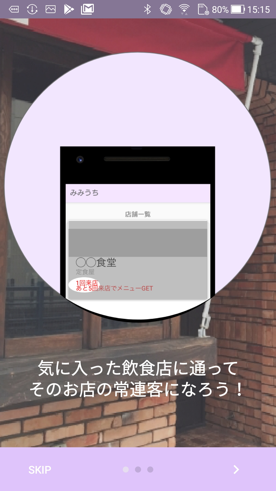
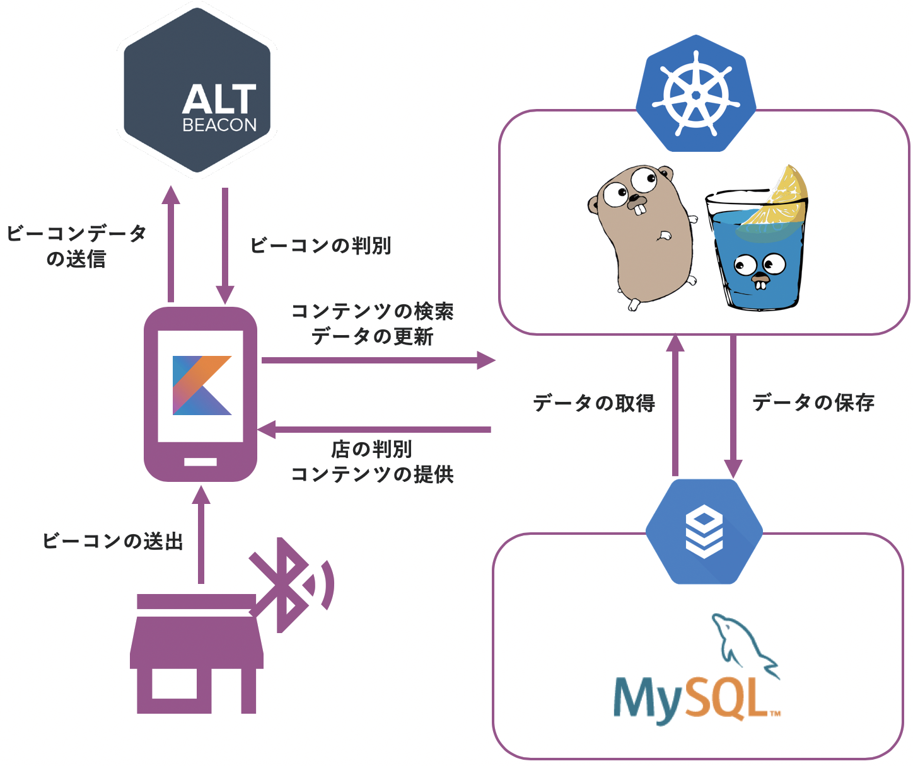
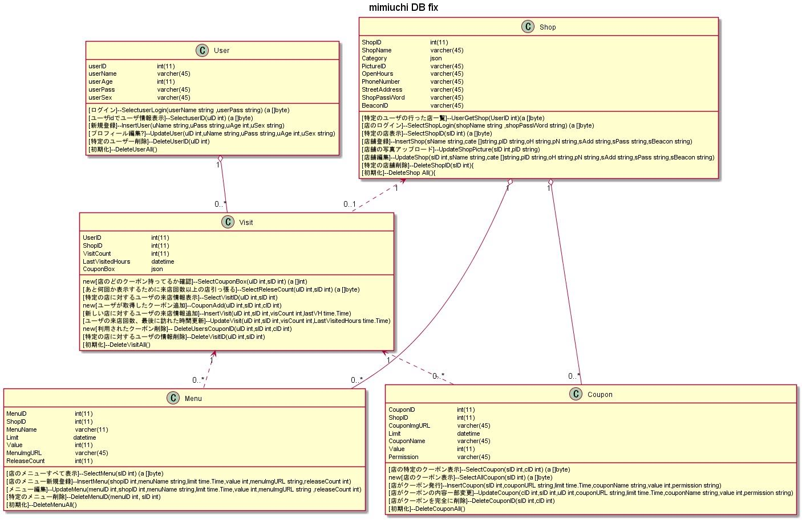

2019年に授業のプロジェクト学習で製作したプロダクトです。
担当
サーバーサイド設計・開発，インフラ構築
プロダクトの目的
地域密着型の飲食店で店員が把握できていない常連客を確保する
ターゲット
店員とコミュニケーションを取らない常連客
背景と目的
函館の飲食店には，個人店が多いという特徴がある．例えば，大門横丁では，居酒屋やラーメン店などの函館に根ざした個人店が連なっている．このような個人店ではメニュー表には載っていない裏メニューや試作品といったメニューが提供されていることがある．ここでは，そういった公には知られていないメニューのことを限定メニューと呼ぶ．限定メニューは，常連客に提供されることが多い．例えば，ラッキーピエロには，常連優遇サービスがある．このサービスは，利用金額に応じて4段階でそれぞれ特典がつくポイント会員制度を導入している．最高ランクに昇格すると，ご利用金額６％以上の還元に加えて，来店すると大歓待を受けるなどの特別なサービスもある．優遇された客は自然と店に愛着を持ち，また，そうなることで幅広い層の支持を得ている．このように，店側にとって常連客の存在はとても重要なものであり，常連を優遇することは店を盛り上げることにも繋がっている．しかし，限定メニューによって店を盛り上げるための課題として，限定メニューの認知度が高まると，価値が下がってしまうことがある．また，店側が把握していない常連客がいる可能性がある．店員とのコミュニケーションをあまり好まない客や，そもそも客とのコミュニケーションが少ない店などでは，客側からすると，自分がその店の常連になれているのか分からない．しかし，常連客は一見の客よりもお金を支払っているので，手厚い顧客サービスを提供されるのは当たり前という考えを持つ人は少なくない．さらに，一見の客との差別化があからさまだと不快感を覚える人も存在する．
本グループの目的は，客とお店を繋ぐ「えこひいき」コミュニケーションを実現し，背景にあげた飲食店の抱えている課題を解決することである．これにより，誰でも常連客になることができ，常連サービスを受けることができる．また，店側は把握しきれてない常連客を把握することができる．さらに，限定メニューの価値を下げることなく，限定メニューを食べることができる．
客側機能
- ビーコンを用いたシステム的な常連客の認定
- 常連客に対する限定メニュー・クーポンの提供
- 次の限定メニュー・クーポンまでの来店回数提示
- メニュー等のブックマーク
店側機能
- ビーコンとの連携や店舗情報の登録・編集
- メニュー・クーポンの登録・編集
- 注文されたメニューの統計(注文回数/全体の注文回数)
導入した開発手法
アジャイル（スクラム開発）
開発手順
- フィールドワークによる事前調査
- ブレーンストーミングとKJ法によるアイデア出し
- オープンスペーステクノロジーによるアイデアの深堀り
- 5つのアイデアのグループによるブラッシュアップ
- テーマの決定
- ユーザーストーリーの作成
- プロダクトバックログの作成やスプリントプランニングを行い開発を始める
- スプリントを1週間として実装とレビューを行った
システム仕様
- インフラはk8sを利用して負荷分散・拡張性・継続性・サーバーの画一性があるインフラを構築した
- (データ構造体/API/DBコントロール)で構成されたMVCアーキテクチャを基礎としてGo(Gin)でWeb APIサーバーを構築した
- 自動CI/CDの構築や厳密なエラーハンドリングの実装は行うことが出来なかった
20個のWeb APIを用意し、また以下の設計でdbを構築した(担当者別)
発表
- 中間・成果発表会
- オープンキャンパス
- HAKODATEアカデミックリンク
- enPiT BizSysD 北海道・東北グループ合同発表会
著作権
公立はこだて未来大学